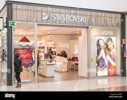
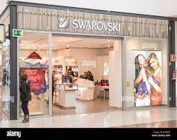

SWAROVSKI
The company is split into three major industry areas: the Swarovski Crystal Business, which primarily produces crystal glass, jewelry, rhinestone, watches and accessories; Swarovski Optik, which produces optical instruments such as telescopes, telescopic sights for rifles, and binoculars; and Tyrolit, a manufacturer of grinding, sawing, drilling, and dressing tools, as well as a supplier of tools and machines. Today, the Swarovski Crystal Business is one of the highest grossing business units within Swarovski, with a global reach of approximately 3,000 stores in roughly 170 countries, more than 29,000 employees, and a revenue of about 2.7 billion euros (in 2018).
WHERE WILL YOU FIND THEM
@ enterance number 2 next to sport scene